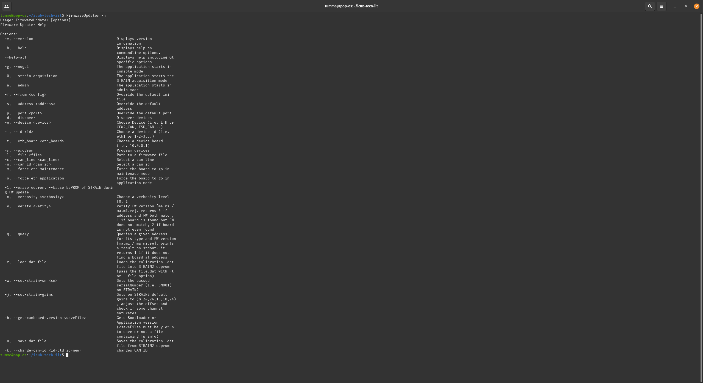
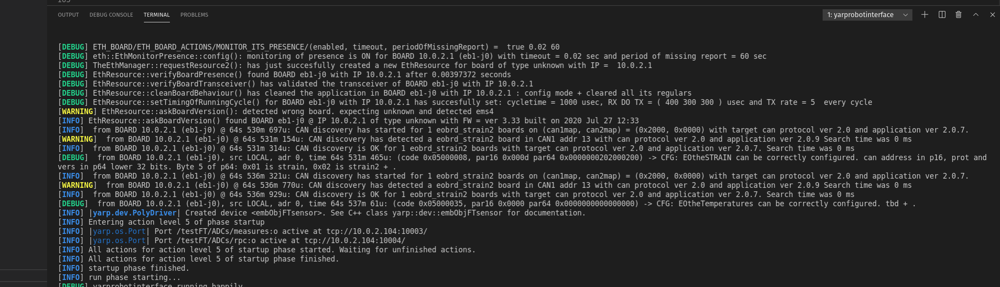

Firmware Documentation¶
Here you can find informations about updating firmware, changing boards properties and firmware revisions in the various versions of the robot.
FirmwareUpdater¶
With the FirmwareUpdater application it is possible to perform GUI-based FW update on both CAN- and ETH-based robots; the commonly used functionalities are:
- Upload
applicationfirmware both onETHboards andCANboards - Change the
IP addrressfor ethernet based boards - Change the
CAN IDfor the CAN based boards - Update the
bootloader(advanced option) - Access to the
F/Tsensors calibration data of theSTTRAIN/STRAIN2

Firmware tools¶
With the FirmwareUpdater application it is possible to perform GUI-based FW update on both CAN- and ETH-based robots.
Here you can find quick and detailed instructions.
Operations on STRAIN with the FirmwareUpdater¶
The operations on the STRAIN boards described in the above sections can be performed also using the new FirmwareUpdater program.
With reference to Figure 2 inside this document you can do as follows.
- Upload a new FW using the button
Upload Application. See also section 6. - Tick the button
Erase STRAIN EEPROMand then upload the new FW if you also want to reset the F/T Sensors. - Launch the STRAIN Calibration GUI with the button
Calibrate STRAINif you want to import a calibration data file.
Firmware versions¶
A complete description of the different firmware versions used by the DSP boards which control the iCub robot can be found here
Automatic update of the robot¶
The user can also decide to perform the automatic update of the complete robot (or of some of its parts). Inside folder scripts of repository there are some examples.
The user can:
- retrieve info with scripts/FirmwareUpdater.script.info.all.sh,
- query the robot with scripts/FirmwareUpdater.script.verify.all.sh. This command also gives an estimate of the time required to perform the firmware update of the boards with old versions.
- update the firmware of all boards with old versions with scripts/FirmwareUpdater.script.update.all.sh
The topology of the robot¶
The robot network is described by the file network.{$YARP_ROBOT_NAME}.xml available for most robots in the repository. In case you cannot find this file, please ask for one here
In its inside there is thelist of all boards with their name, drive, address and link relations.
You can view some of this information with:
- scripts/FirmwareUpdater.script.info.all.sh: it prints the list of all boards with all details
- scripts/FirmwareUpdater.script.topology.all.sh: it prints the list of all ETH boards in link order.
Advanced operations¶
The user can also launch FirmwareUpdater in administration mode to perform advance (but also potentially destructive) operations:
- change IP or CAN address,
- change bootstrap mode of boards,
- upload special system processes which helps maintenance and execution of the application,
- management of strain and strain2 boards.
For how to operate in this mode please refer to this.
Robot Versions and Firmware¶
Below you'll find a detailed description of the various robot versions, in particular for the board type-id or ip address-firmware associations. and the services offered by each board.
Command Line Interface (CLI)¶
FirmwareUpdater provides a CLI with a set of options to do operations via the command line.
By running FirmwareUpdater -h, you'll be prompted with the list of all available options:

CLI options to change CAN ID and IP address¶
Here's below a summary of the CLI functionalities:
- CAN board ID via
SOCKETCANdevice - CAN board ID via
ETHdevice - IP address of an ETH board
Change CAN ID via SOCKETCAN¶
In this example, we change the CAN ID on an mtb board connected via SOCKETCAN from 1 to 2.
The syntax of the command is the following :
FirmwareUpdater -g -e SOCKETCAN -i 0 -c 0 -n 1 -k 2
-g -e SOCKETCAN -i 0 -c 0 is required to use a SOCKETCAN device (i.e. ESD CAN/USB) with ID=0 and canline=0
- -n 1 -k 2 changes old id 1 (-n 1) to 2 (-k 2)

Change CAN ID via ETH¶
In this example, we change the CAN ID on an mtb board connected via ETH through an ems4 board w/ IP address = 10.0.1.1 from 1 to 2.
The syntax of the command is the following :
FirmwareUpdater -g -e ETH -i eth1 -t 10.0.1.1 -c 1 -n 1 -k 2
-g -e ETH -i eth1 -t 10.0.1.1 -c 1 is required to use a ETH device (i.e. ems4) with ip address = 10.0.1.1 and canline=1
- -n 1 -k 2 changes old id 1 (-n 1) to 2 (-k 2)

Change IP address of an ETH board¶
In this example, we change the IP address on anems4board from10.0.1.1to 110.0.1.21.
The syntax of the command is the following :
-g -e ETH -i eth1 FirmwareUpdater -g -e ETH -i eth1 -t 10.0.1.1 -2 10.0.1.2
is required to use aETHdevice (i.e.ems4)
--t 10.0.1.1 -2 10.0.1.2changes old iIP address` 10.0.1.1 to 10.0.1.2

How to use ETH boards with a different IP subnet¶
We provide here the instructions to use ETH boards with a subnet different from the standard 10.0.1.X.
Change IP to the board¶
Let's assume that the board we use has the 10.0.1.1 IP and that we aim to switch to 10.0.2.1. You ought to follow these steps:
- Run
FirmwareUpdater -a - Select the eth interface and then
Discover - Select the board and then
Force ETH Maintenance - Select
Upload Applicationand flash the new firmware (icub-firmware-buildon branchdevel) - Select
Change IP Addressand input10.0.2.1
Configure the system¶
- Change the IP address of your ETH interface to
10.0.2.104 - Change the
firmwareupdater.inifile including this lineETH "10.0.2.104:3333" - Reset the board and check if it is discoverable with the
FirmwareUpdater - Change the following
xmlfiles :
/hardware/electronics/pc104.xml
<?xml version="1.0" encoding="UTF-8" ?>
<!DOCTYPE params PUBLIC "-//YARP//DTD yarprobotinterface 3.0//EN" "http://www.yarp.it/DTD/yarprobotinterfaceV3.0.dtd">
<params xmlns:xi="http://www.w3.org/2001/XInclude" robot="single-ETH-2FOC-motor" build="1">
<group name="PC104">
<param name="PC104IpAddress"> 10.0.2.104 </param>
<param name="PC104IpPort"> 12345 </param>
<param name="PC104TXrate"> 1 </param>
<param name="PC104RXrate"> 5 </param>
</group>
</params>
hardware/electronics/knee-eb10-j0-eln.xml
<?xml version="1.0" encoding="UTF-8" ?>
<!DOCTYPE params PUBLIC "-//YARP//DTD yarprobotinterface 3.0//EN" "http://www.yarp.it/DTD/yarprobotinterfaceV3.0.dtd">
<params xmlns:xi="http://www.w3.org/2001/XInclude" robot="single-ETH-2FOC-motor" build="1">
<xi:include href="./pc104.xml" />
<group name="ETH_BOARD">
<group name="ETH_BOARD_PROPERTIES">
<param name="IpAddress"> 10.0.2.1 </param>
<param name="IpPort"> 12345 </param>
<param name="Type"> mc4plus </param>
<param name="maxSizeRXpacket"> 768 </param>
<param name="maxSizeROP"> 384 </param>
</group>
<group name="ETH_BOARD_SETTINGS">
<param name="Name"> "knee-eb10-j0" </param>
<group name="RUNNINGMODE">
<param name="period"> 1000 </param>
<param name="maxTimeOfRXactivity"> 400 </param>
<param name="maxTimeOfDOactivity"> 300 </param>
<param name="maxTimeOfTXactivity"> 300 </param>
<param name="TXrateOfRegularROPs"> 5 </param>
</group>
</group>
<group name="ETH_BOARD_ACTIONS">
<group name="MONITOR_ITS_PRESENCE">
<param name="enabled"> true </param>
<param name="timeout"> 0.020 </param>
<param name="periodOfMissingReport"> 60.0 </param>
</group>
</group>
</group>
</params>
Run yarprobotinterace¶
Finally, if all the operations above came off, you're then able to run yarprobotinterface using the new subnet 10.0.2.X.
Test¶
The software has been compiled also on the Linux machine running yarprobotinterface and it works.
See below an example of yarprobotinterface running with a gateway set to 10.0.2.104 connected to an ems4 board with address 10.0.2.1 and an F/T sensor (strain2) connected to it.

Strain2 dedicated CLI Options¶
The CLI options implemented for the strain2 (F/T sensors) are :
-zor--load-dat-file: Loads the calibration .dat file into STRAIN2 eeprom (pass the file.dat with -l or --file option)example : FirmwareUpdater -g -e ETH -i eth1 -t 10.0.1.1 -c 1 -n 13 -z -l calibrationDataSN003.dat-wor--set-strain-sn <sn>: Sets the passed serialNumber (i.e. SN001) on STRAIN2example : FirmwareUpdater -g -e ETH -i eth1 -t 10.0.1.1 -c 1 -n 13 -w SN001-jor--set-strain-gains: Sets on STRAIN2 default gains to (8,24,24,10,10,24) , adjust the offset and check if some channel saturatesexample : FirmwareUpdater -g -e ETH -i eth1 -t 10.0.1.1 -c 1 -n 13 -j-bor--get-canboard-version <saveFile>: Gets Bootloader or Application version (must be y or n to save or not a file containing fw info) example : FirmwareUpdater -g -e ETH -i eth1 -t 10.0.1.1 -c 1 -n 13 -b y-uor--save-dat-file: Saves the calibration .dat file from STRAIN2 EEPROMexample : FirmwareUpdater -g -e ETH -i eth1 -t 10.0.1.1 -c 1 -n 13 -u
Info
All the example are running on a setup with an EMS4 board with IP=10.0.1.1 and a STRAIN2 board attached to it in the CAN1 line with ID=13
Useful Resources¶
Below a list of useful links:
- Low-level boards programming (using degugger/programmer)
- Firmware sources
- Firmware binaries
- FirmwareUpdater sources